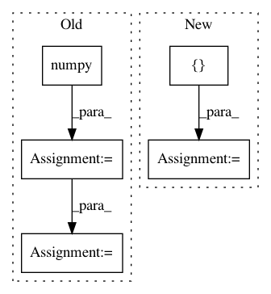

50839f8ed95147c71f9f045495ed45380a2ce513,test/color/test_hls.py,TestRgbToHls,test_nan_rgb_to_hls,#TestRgbToHls#,63
Before Change
data = data.repeat(3, 1, 1) // 2x3x5x5
// OpenCV
data_cv = data.numpy().transpose(1, 2, 0).copy()
expected = cv2.cvtColor(data_cv, cv2.COLOR_RGB2HLS)
expected[:, :, 0] = 2 * math.pi * expected[:, :, 0] / 360.
expected = expected.transpose(2, 0, 1)
// Kornia
After Change
data = data.repeat(3, 1, 1) // 2x3x5x5
// OpenCV
expected = torch.cat([torch.zeros(1, 5, 5), torch.ones(1, 5, 5), torch.zeros(1, 5, 5)], dim=0)
// Kornia
f = kornia.color.RgbToHls()
In pattern: SUPERPATTERN
Frequency: 3
Non-data size: 5
Instances
Project Name: arraiy/torchgeometry
Commit Name: 50839f8ed95147c71f9f045495ed45380a2ce513
Time: 2019-11-19
Author: priba@cvc.uab.cat
File Name: test/color/test_hls.py
Class Name: TestRgbToHls
Method Name: test_nan_rgb_to_hls
Project Name: rusty1s/pytorch_geometric
Commit Name: 5ffa38fca42bb3fbee030f4b80264e0f4910a49c
Time: 2018-01-16
Author: matthias.fey@tu-dortmund.de
File Name: torch_geometric/datasets/utils/tu_format.py
Class Name:
Method Name: read_adj
Project Name: apache/incubator-tvm
Commit Name: 4c13ae9d17d1709ed7a777ce1bb72212e8d2559d
Time: 2020-12-25
Author: masahi129@gmail.com
File Name: tests/python/frontend/pytorch/test_object_detection.py
Class Name:
Method Name: test_detection_models